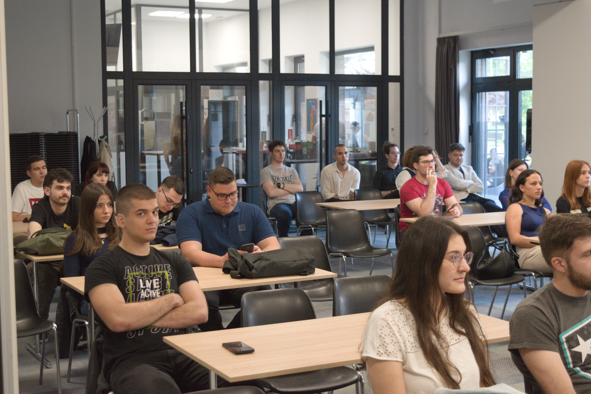
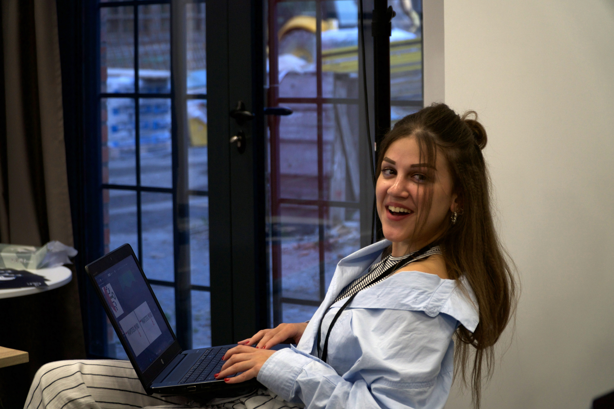
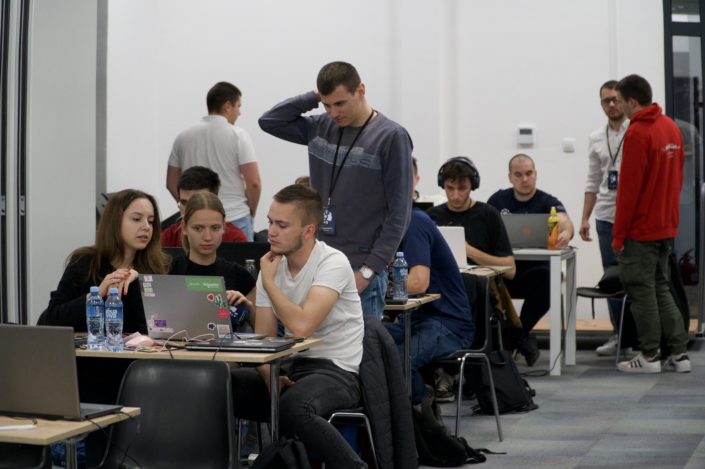
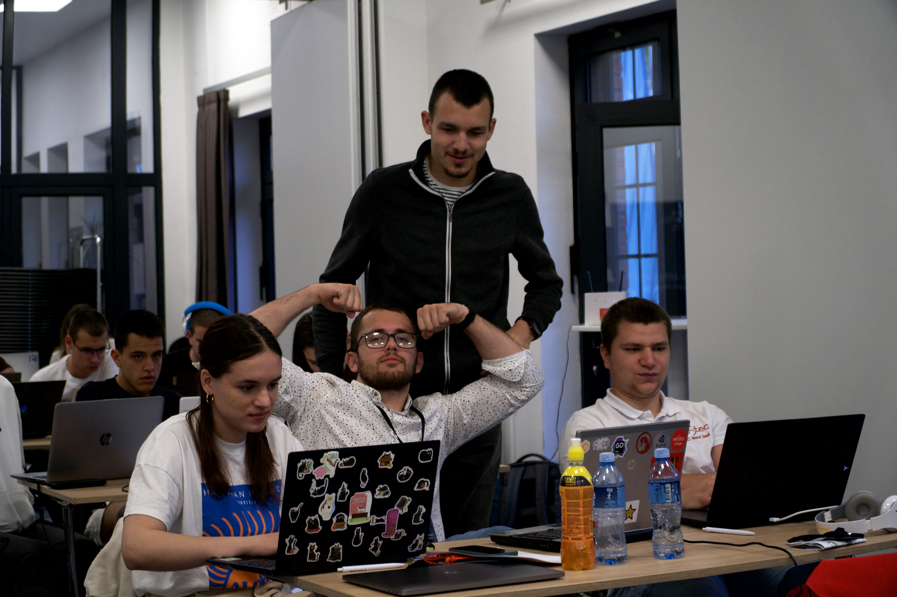

Istorijat
8 godina održavanja hakatona
Od februara do maja, već osam godina zaredom, pod okriljem studentskog udruženja EESTEC održava se serija izazova – EESTech Challenge, internacionalni hakaton koji okuplja ambiciozne studente elektrotehnike i računarstva.
2025.
Električna kola u industriji 4.0
Električna kola imaju ključnu ulogu u savremenoj industriji, jer omogućavaju napajanje, upravljanje i automatizaciju industrijskih sistema. Koriste se u proizvodnim linijama, energetskim postrojenjima i upravljačkim sistemima kako bi se obezbedio pouzdan i bezbedan rad mašina.
30
takmičara
10
timova
12
predavača


2024.
AI applications
Veštačka inteligencija ima široku primenu u različitim industrijama, uključujući proizvodnju, zdravstvo, finansije i marketing. AI sistemi se koriste za automatizaciju procesa, analizu velikih količina podataka i donošenje inteligentnih odluka u realnom vremenu.
30
takmičara
10
timova
10
predavača


2022.
Machine learning
Machine learning je oblast veštačke inteligencije koja omogućava sistemima da uče iz podataka i unapređuju svoje performanse bez eksplicitnog programiranja. Algoritmi mašinskog učenja koriste se za prepoznavanje obrazaca, predikciju i klasifikaciju u različitim domenima, kao što su obrada slika, obrada prirodnog jezika i analiza podataka.
30
takmičara
10
timova
8
predavača


2019.
Internet of things
Internet of Things predstavlja mrežu povezanih uređaja koji prikupljaju i razmenjuju podatke putem interneta. IoT se primenjuje u pametnim gradovima, industriji, poljoprivredi i domaćinstvima, gde omogućava daljinsko praćenje, automatizaciju i optimizaciju sistema.
30
takmičara
10
timova
7
predavača

